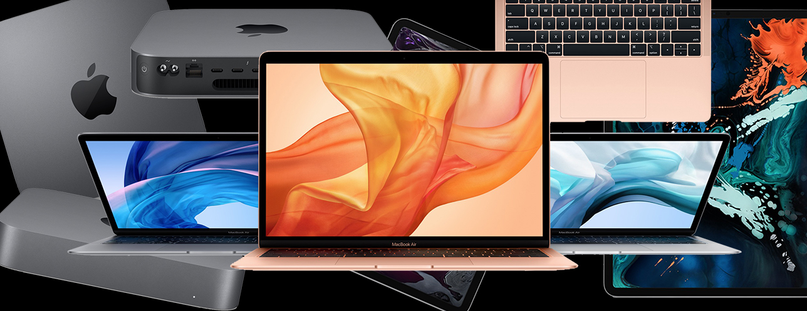
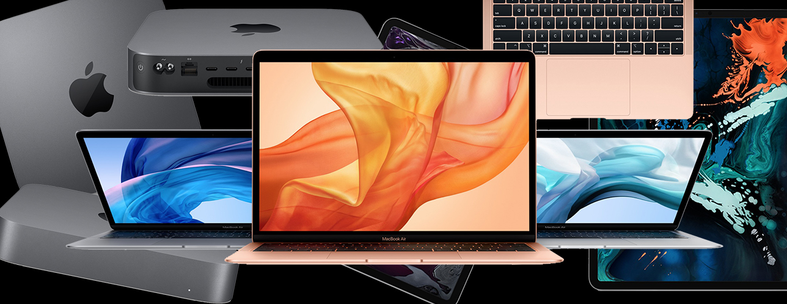

1. Trade-in values will vary based on the condition, year, and configuration of your eligible trade-in device. Not all devices are eligible for credit. You must be at least 18 years old to be eligible to trade in for credit or for an Apple Gift Card. Trade-in value may be applied toward qualifying new device purchase, or added to an Apple Gift Card. Actual value awarded is based on receipt of a qualifying device matching the description provided when estimate was made. Sales tax may be assessed on full value of a new device purchase. In-store trade-in requires presentation of a valid photo ID (local law may require saving this information). Offer may not be available in all stores, and may vary between in-store and online trade-in. Some stores may have additional requirements. Apple or its trade-in partners reserve the right to refuse or limit quantity of any trade-in transaction for any reason. More details are available from Apple’s trade-in partner for trade-in and recycling of eligible devices. Restrictions and limitations may apply. To access and use all the features of Apple Card, you must add Apple Card to Wallet on an iPhone or iPad with the latest version of iOS or iPadOS. Update to the latest version by going to Settings > General > Software Update. Tap Download and Install. Available for qualifying applicants in the United States. Apple Card is issued by Goldman Sachs Bank USA, Salt Lake City Branch. Learn more about how Apple Card applications are evaluated at support.apple.com/kb/HT209218. A subscription is required for Apple TV+. Major League Baseball trademarks and copyrights are used with permission of MLB Advanced Media, L.P. All rights reserved.